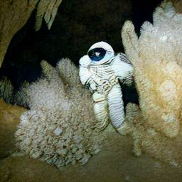
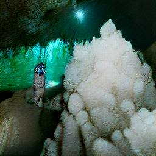
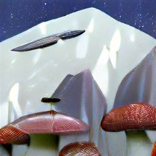
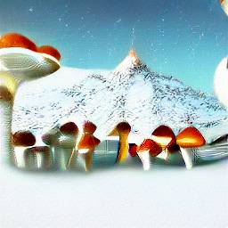
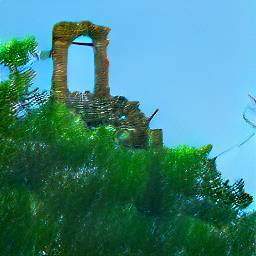
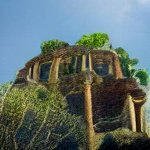
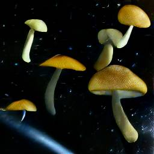
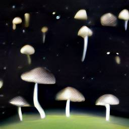

-- Planet A -- Day 1 Log --
-> I arrived to this planet, today is my first day here.
-> I came to this steep canyon, while getting out of my ship I noticed (despite their big size), huge crystal formations. Strangely enough, they didn't shine, as if they needed something to light them up.
-> Got near one big green crystal, it was round but had sharp corners, as if it didn't want anyone close. Broke a little piece, took a picture and got inside my ship.

-- Planet A -- Day 2 Log --
-> While resting in my ship (autopilot), I stumbled across this big (and i mean it) mushrooms. What intrigued me was how these covered a whole snow mountain, even more than the snow. I've never seen something like that, there has to be a reason. Were they there because of the oxygen? I didn't see them below, there had to be a reason. Maybe the sunlight was better in ther?
-> I didn't step out of my ship because the mointain was not as "safe" as i wanted. I didn't want an avalanche to form and freeze me to death. So i just went ahead back to rest, hoping those mushrooms were, well, mushrooms. Configured my autopilot to lead me to a safer place.

-- Planet A -- Day 3 Log --
-> This was intersting, it seems like my autopilot really has been in this planet before lol. While in the foot of the mountain, were less snow was noticeable (but still trees), on top of them, were remains of an ancient civilization, hiding behind leaves and vines. There it was what it seemed like a house, but for someone twice my size, my ship's size. This group of habitants were not there, and somehow seemed like were not coming back? Altough what really amazed me was how despite their size, they decided to settle on top of trees.
-> What could be so dangerous for the "big people", that they decided to live away from the floor?. I wasn't sure, but what gave me chills thinking how they were not on their "safe place" anymore. Did the danger from below reached their cities on top of the trees? There was no way of knowing. Despite this, I decided to investigate more, only to find the innofencive mushrooms from the mountain, just in a drastically less quantity in comparison to the ones in the mountain.
-> I had too much in my mind. I felt my whole brain falling down the rabbit hole, was i close to uncovering something?
-> "The end of a civilization, caused by the start of another", sounded like a good title for this planet's journey. Talking about the planet, i also have not named it, i need to set up a reminder or something to brainstorm ideas for it.
-> I was decided to find the reason (if there was any), so taking my lucky shot, I just turned ON my autopilot again, and went to rest my mind for some time. If the ship brought me into this, then it should help me find it's conlusion.

-- Planet A -- Day 4 Log --
-> I heard alarms, snow was all around the ship. Avalanche, the same thing I was just trying to avoid, had happened. But why? I realized we were back on the snow mountain, why did my ship brought me back, and much more worse, with a snow storm happening and seemingly destroying the mountain itself.
-> To my surprise, it ended quickly, but to my bigger surprise, the iconic mountain mushrooms were not there anymore, were they buried by all this snow/glacier chaos?
-> I decided to get out of my ship to see this, if something was happening on the planet, it must have caused this avalanche.
-> Equipped my suit and got out.
-> I can tell you this, the difference of mushrooms that i found buried versus the one that were before was huge. Do mushrooms evaporate at low temperature? Acid snow? What could even make sense, all in this planet was new for me.
-> I knew something was up, but in my mind, i couldn't figure out what, there was something i was not seeing. Civilizations crumbling, mountains falling down, mushrooms dissapearing, caves full of colorful round crystals (altough I think that has nothing to do).
-> There was a vague line among this things that i couldn't see.
-> Strangely enough, shadows started to appear, one by one, different sizes, but all of them were getting bigger at the same rate. I just had to look up. There they were, the mushrooms were flying, reaching into space. They seemed to be joining, mixing, blending? All these among themselves. I've never seen them do that, were they really mushrooms?
-> It was like some kind of hive-consciousness, gathering all mushrooms into something bigger, while at the same time, reuniting with the others coming up from other planets.
-> All with one unknown specific destination, galaxies and galaxies away.
